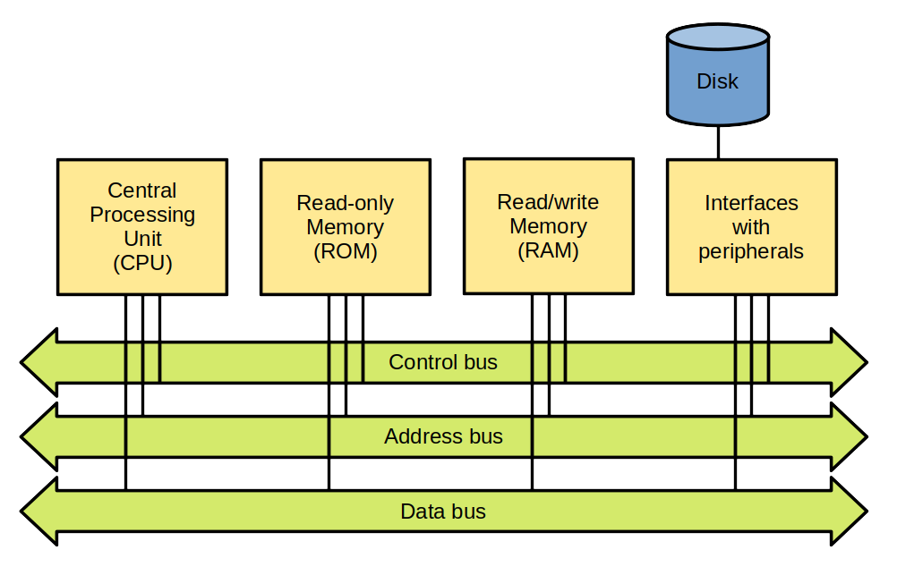
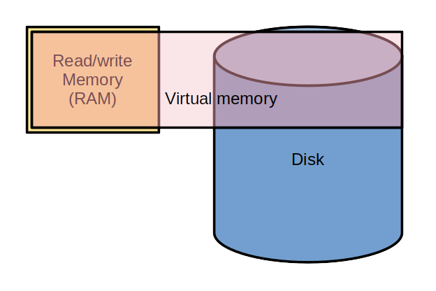
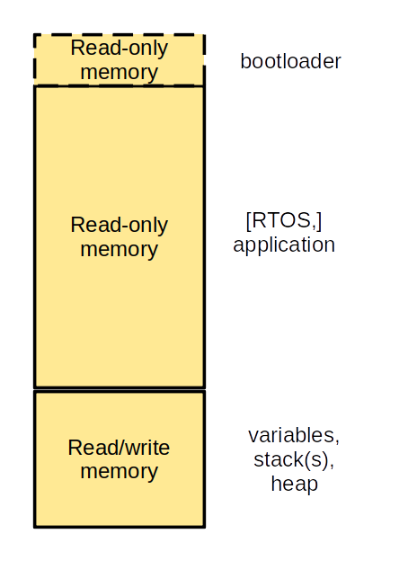
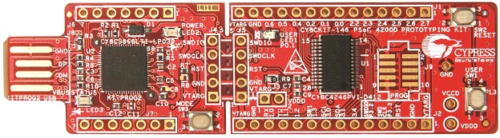
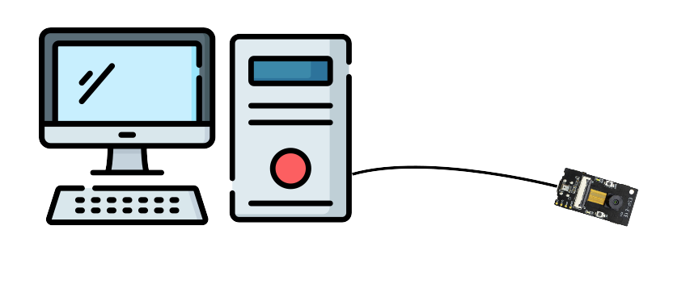
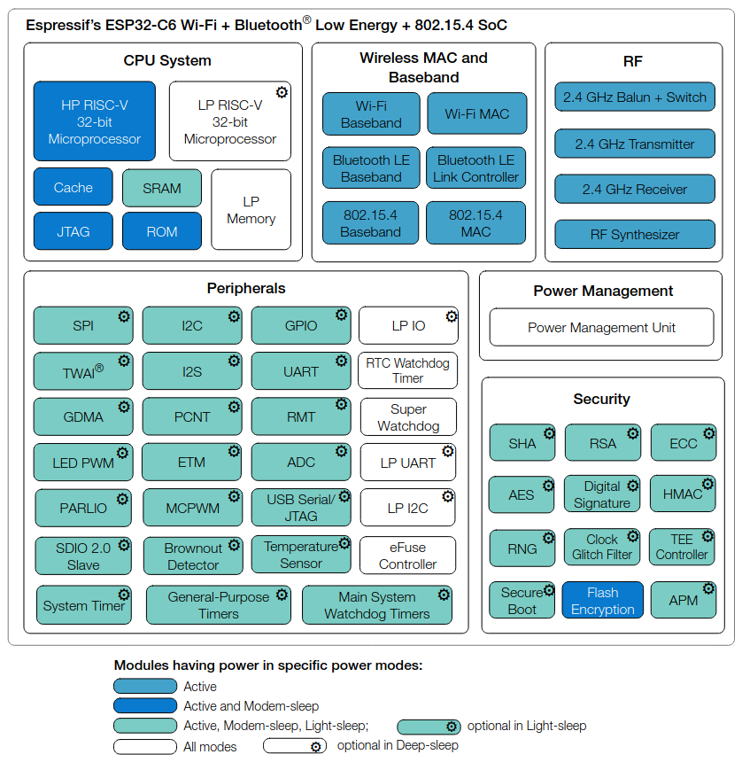
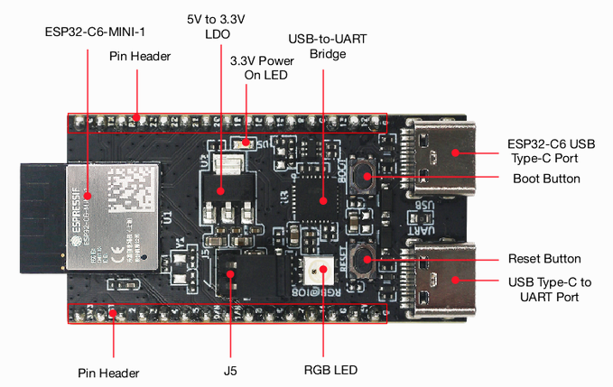

Introduction to the use of an RTOS
Pascal Bodin

Document history
| When | What |
|---|---|
| 01-May-2024 | Introductory part |
This work is licensed under a Creative Commons Attribution-NonCommercial-ShareAlike 4.0 International License
Credits
- reveal.js - Copyright (C) 2020 Hakim El Hattab
- Freepik from www.flaticon.com
- Electricity icons created by Dewi Sari - Flaticon
How to navigate
- Use the right and left arrows (in bottom right corner)
- Overview: press "O" letter - navigate with arrow keys - "ESC" or click on slide to exit
- Full screen: press "F" letter - "ESC" to exit
Contents
Foreword
Who am I?
-
Independent consultant and freelancer - connected devices


- Beforehand: software engineer, project leader, team manager, co-founder, technical expert
- McDonnell Douglas Informations Systems, Digital Equipement Corporation (DEC), Orange
- Co-founded (and closed down) two companies
- First connected objects project: in 1990
More information
Aim
- Provide an overview of what a general purpose microcontroller is
- Provide an overview of microcontroller environment (hardware and software)
- Provide an overview of how to use an RTOS
Introduction
Hardware progress
1982 - Cray X-MP

- World most powerful computer
- 0.94 GFLOPS (giga floating-point operations per second)
- Price: around US$15 million (would be US$45 million in 2022)
2022 - iPhone 14

- 1.37 TFLOPS (GPU)
- Price: US$800
In 40 years:
- Processing power multiplied by around 1,400
- Cost divided by around 56,000
What do the years to come have in store?!
Embedded applications
1969 - The computer that made it possible to land on the Moon

- Weight: aroung 32 kg (without the user interface)
- Power supply: 28 V CC - 70 W
- Permanent memory: 36 Kwords
- Erasable memory: 2 Kwords
- Clock: 1 MHz (83 kHz instruction cycle time)
- Simple operating system, with priority handling
Compared to current configurations:
- Very little memory
- Very little processing power
Yet it allowed to bring human beings to the Moon.
It's not because you don't have a lot of memory and processing power that you can't develop great applications 🙂
A modern microcontroller with similar processing power:

- Permanent memory: 128 Ko
- Erasable memory: 8 Ko
- Clock: up to 64 MHz
- Power consumption: 30 mW (microcontroller alone)
- Power consumption in sleep mode: 0,1 μW
- Price: around US$3.00
Reminders
Reminder: computer architecture
Von Neumann architecture
- Memory stores data and instructions
- Same bus for data and instructions
Harvard architecture
- Separate memory for data and for instructions
- Bus for data and bus for instructions
Variants exist: same memory but separate buses, etc.
8-bit, 16-bit, 32-bit, 64-bit computers
Register: a memory cell inside the CPU. A CPU contains several of them.
n-bit: n is the number of bits of a register.
Reminder: computer boot process
The CPU starts executing a short program in ROM: the bootstrap.
The bootstrap loads the boot loader from a disk.
The bootloader loads the Operating System (OS) from a disk.
Of course, variants exist!
For a PC running Linux:
- bootstrap: BIOS
- bootloading:
- a first-stage bootloader is read from the Master Boot Record (MBR)
- the first-stage bootloader loads a second-stage bootloader
- the second-stage bootloader loads the Linux kernel
Reminder: virtual memory
Main functions of virtual memory:
- Provide each process with its own address space
- Ensure process isolation
- Ensure OS isolation
- Provide more memory than physical memory
Nowadays, virtual memory is implemented thanks to an MMU (Memory Management Unit).
Microcontroller board
Microcontroller
- A computer in a chip:
- Central Processing Unit (CPU)
- Read-only memory (Flash memory)
- Read/write memory (RAM - Random Access Memory)
- Peripherals and interfaces:
- Analog I/O
- Digital I/O
- Timers
- Serial links
- Serial buses
- Watchdog
- etc.
Microcontroller memory
Bootloader
- Allows easy software update
- Waits for binary data, usually provided on a serial link
- Is active only under specific conditions (pins set to some levels)
Note: depending on the µC, a software update may also be performed Over the Air (OTA)
Board architecture

- Microcontroller
- CPU + memory
- Some peripherals (e.g. timers, watchdog, etc.)
- Interfaces (serial links, serial buses, GPIO, etc.)
- Communication
- Optional
- May be hosted by the microcontroller (Wi-Fi, Bluetooth, LoRa, etc.)
- Optionally:
- Additional interfaces
- Peripherals (sensors, etc.)
- Positioning
- User interface
- Power supply management
- Data storage
- Not depicted: optional, additional memory, outside of the microcontroller
Important board/microcontroller characteristics?
- Depend on the application!
- Example:
- General Purpose Input/Output (GPIO)
- Serial links
- Serial buses (SPI, I2C, etc.)
- Analog to Digital Converters (ADC), Digital to Analog Converters (DAC)
- Analog blocks
- Instruction cycle time
- Memory (size, type, expandable...)
- Registers size (8/16/32 bits)
- Packaging
- etc.
Other important characteristics: hardware tools
- Development board
- Programmer, debugger
- Open source hardware
Other important characteristics: software tools
- Cross-compilation toolchain
- Integrated Development Environment (IDE)
- Open source software
Other important characteristics: support
- Professional support
- Active community (forums, examples...)
Some common microcontroller families
- Microcontrollers with Arm cores
- ESP8266/ESP32
- PSoC
- RISC-V
- PIC
- AVR
- MIPS32
- etc.
Arm
- UK company created in 1990
- there isn't any Arm microcontroller
- Arm provides Intellectual Property (IP) blocks, under a licensing agreement
- among these blocks: RISC microcontrollers cores
- for the IoT (low power, low cost): Cortex-M family
RISC: Reduced Instruction Set Computer
Shipped processors
- end 2020: 180 billions
- including 6.7 billions in Q4 2020
- including 4.4 billions of Cortex-M in Q4 2020
- Sep-2022: more than 250 billions
Arm processor architecture is more popular than any other architecture.
Some Cortex-M licensees:
Arm cores


Instruction sets

Provided elements

Example: STMicroelectronics - STM32 family

STM32L073RZ


- Price: US$6.95 (unit) - US$2.66 (10,000)
Development board

Price: US$13
STM32WL55


- price: US$9.25 (unit) - US$4.54 (10,000)
Development board

US$42
Example: Cypress PSoC 4200 family
Microcontroller block:
- Cortex-M0 core
- Clock: up to 48 MHz
- Memory: up to 256 KB Flash, 32 KB RAM
- USB, CAN
Analog blocks:
- Up to 4 op amp
- A/D converter, up to 1 mega samples/s on 12 bits
- Up to 6 comparators
- Up to 4 D/A converters
- Capacitive sensing
Digital blocks:
- Up to 8 universal digital blocks
- Up to 8 timers/counters/PWM blocks
- Up to 4 serial communication blocks (UART, I2C, SPI)
- Segment LCD drive
Development board
Price: US$19.94
Espressif - ESP family
Espressif family
- ESP32-S Series
- ESP32-C Series
- ESP32-H Series
- ESP32 Series
- ESP8266 Series
- Announced: ESP32-P Series
Main characteristics (depend on series)
- Single-core or dual-core (Tensilica Xtensa LX7 / Tensilica L106 / RISC-V)
- Wi-Fi 2.4 GHz / Wi-Fi 6 / Bluetooth / Bluetooth Low Energy / IEEE 802.15.4 (Thread / Zigbee)
- Many peripherals
- Vector instructions ⇒ neural network and digital signal processing
- Security
- Low power
- Software Development Kits (IoT, AI, audio, etc.)
- Low cost
Price:
- ESP32-C3FH4 - 4MB Flash - Wi-Fi + Bluetooth LE: US$1.30
Development boards
ESP32-C3-DevKitC-02 - US$8.00
ESP32-EYE - US$19.90
Software development - part 1
Cross development
With the computer:
- Edit source-code
- Cross build (cross compile and link)
- Emulate and debug
With the computer and the microcontroller board:
- Program the Flash memory
- Debug
- Every microcontroller manufacturer: full development environnement
- Often free
- Often based on Open Source software (Eclipse, gcc, etc.)
Practice: Hello World for the ESP32-C6
ESP32
Main characteristics
- Wi-Fi 6 (b/g/n/ax)
- Bluetooth 5 (LE, mesh)
- Dual core:
- HP RISC-V processor - 160 MHz
- LP RISC-V processor - 20 MHz
- 320 KB ROM
- 512 KB HP SRAM
- 16 KB LP SRAM
- 16 KB SRAM in RTC
- Interface for external Flash and SRAM chips
- Timers, GPIOs, ADC, SPI, I2S, I2C, UART, etc.
- Flash: 4 MB in chip package
ESP32-C6-DevKitM-1
Documentation
ESP32 development environment
If you completed the prerequisites, you should have a VM with a copy of the RTOS-presentation repository, and Espressif-IDE installed.
If not, complete the prerequisites.
Then:
- Check that connecting the ESP32-C6-DevKitM-1 creates a serial port
- Create the Hello World project
- Build it
- Flash the ESP32-C6-DevKitM-1
- Check the log messages